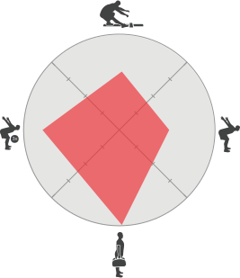

<!--
  Generated template for the FcsReportEfficiencyPage page.

  See http://ionicframework.com/docs/components/#navigation for more info on
  Ionic pages and navigation.
-->
<ion-header color="dark">

  <ion-navbar color="dark">
    <ion-title>Efficiency Report</ion-title>
  </ion-navbar>

</ion-header>


<ion-content padding>

  <p text-center>This graph displays your results distribution of the 4  quadrants relating to performance.</p>

  

  <ion-grid text-center>
    <ion-row>
      <ion-col col-3 [navPush]="pushPage">
        <small>Movement Control</small>
        <div class="c100 p68 small dark">
          <span>68%</span>
          <div class="slice">
            <div class="bar"></div>
            <div class="fill"></div>
          </div>
        </div>
      </ion-col>
      <ion-col col-3>
        <small>Explosive Control</small>
        <div class="c100 p78 small dark">
          <span>78%</span>
          <div class="slice">
            <div class="bar"></div>
            <div class="fill"></div>
          </div>
        </div>
      </ion-col>
      <ion-col col-3>
        <small>Impact Control</small>
        <div class="c100 p66 small dark">
          <span>66%</span>
          <div class="slice">
            <div class="bar"></div>
            <div class="fill"></div>
          </div>
        </div>
      </ion-col>
      <ion-col col-3>
        <small>Postural Control</small>
        <div class="c100 p100 small green">
          <span>100%</span>
          <div class="slice">
            <div class="bar"></div>
            <div class="fill"></div>
          </div>
        </div>
      </ion-col>
    </ion-row>
  </ion-grid>

</ion-content>
